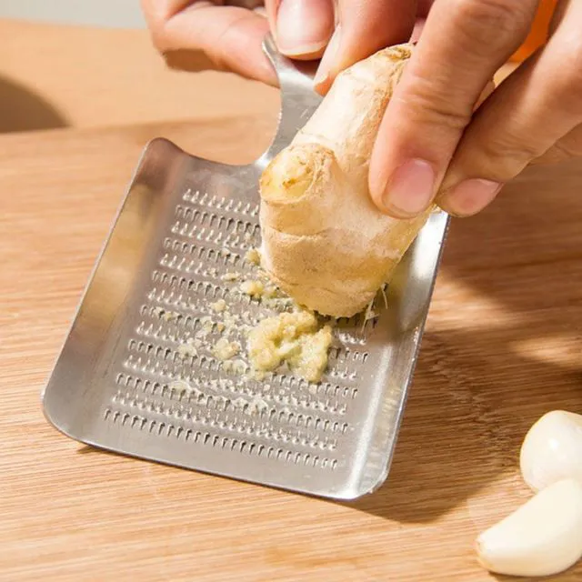

Como preparar Sashimi?

Sashimi
Sashimi é uma iguaria da culinaria japonesa que consiste de peixes e frutos do mar muito frescos, fatiado em pequenos pedaçõs e servidos apenas com
algum tipo de molho (geralmente shoyu, pasta de wasabi, condimentos como gengibre fresco ralado ou ponzu), e guarnições simples como shiso e rais de daikon fatiada.
Ingredientes
- 500g de salmão fresco fatiado bem fininho (utilize uma faca afiada e antes de fatiar, sempre esfregue limão na lâmina para um fatia não colcar na outra)
- 1 xícara (café) de shoyu
- 1 colher de sopa de gengibre fresco ralado
Modo de Preparo
- Fatie o salmão utilizando uma faca afiada e a cada corte esfregue uma banda de limão na faca para não grudar no peixe:

- Rale o gengibre:

- Misture com o shoyu:

- Coloque a mistura num recipiente e deixe o peixe marinando por 15 minutos

- Sirva de preferência acompanhado com arroz japonês(gohan)

Bon Appétit